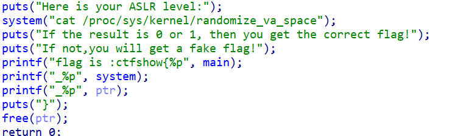

pwn20、21、22
https://blog.csdn.net/linyt/article/details/51635768
https://linyt.blog.csdn.net/article/details/51636753
https://linyt.blog.csdn.net/article/details/51637832
.got和.got.plt是否可写
checksec当中的RELRO与此有关，
| 当RELRO为Partial RELRO时，表示.got不可写而.got.plt可写。 |
|---|
| 当RELRO为FullRELRO时，表示.got不可写.got.plt也不可写。 |
| 当RELRO为No RELRO时，表示.got与.got.plt都可写。 |
根据checksec得知flag的前半部分
| 20:1 1 |
|---|
| 21:0 1 |
| 22:0 0 |
Readelf -S pwn找到flag后半部分
| 20:0x600f18、0x600f28 |
|---|
| 21:0x600ff0_0x601000 |
| 22:0x600fc0 |
按题目要求拼接flag即可
pwn23
我觉得这道题不应该出现在这里，或者出现在这里就是让大家了解一下栈溢出
连接之后可以直接进行操作，…/ls
发现ctfshow_flag可以直接cat，但是这里不行
file和checksec一下，32，进去ida跟进ctfshow，发现strcpy函数，此函数不会限制大小，但其里面有dest上方限制了大小为58，可以栈溢出(0x3Eh+0x4)
至于为什么栈溢出之后会出现flag：
ida上面还有一段代码 signal(11, (__sighandler_t)sigsegv_handler);
简单来说就是我们利用了栈溢出，这段代码检测出了我们这种非法行为，然后就运行sigsegv_handler这个函数，而这个函数正好可以打印出来flag
这个内容在pwn35当中还会出现
pwn24
题目提示：你可以使用pwntools的shellcraft模块来进行攻击
这道题大致应该是让我们认识一下shell和exp
先解释一下shell：相当于我们windows上面的cmd
exp是我们利用程序漏洞，编写出的可以拿到服务端的shell的代码
例如本题拿到shell的exp：
1 | from pwn import * //引入pwn库 |
其他作者的wp里面没有说明为什么写一个shell就可以拿到flag，但有一个作者提到了ret2text题型，之后可以看一下
ctfshow{82d73717-57b0-4b24-a66b-4d916886d6b3}
pwn25
ret2libc
1 | from pwn import * |
总结的来说，就是利用两次公式和一个可用的函数，payload两次。在后一个payload通过sys和binsh的拼接拿到shell。在前一个payload我们需要通过程序本身来拿到可用的函数puts的真实地址，然后通过此地址计算出sys的地址和binsh字符串的地址。
1 | 公式： |
pwn26
什么是ASLR?
大多数的攻击都基于这样一个前提，即攻击者知道程序的内存布局，需要提前知道shellcode或者其他一些数据的位置。因此，引入内存布局的随机化能够有效增加漏洞利用的难度，其中一种技术就是ASLR（Address Space Layout Randomization）。ASLR提供的只是概率上的安全性，根据用于随机化的熵，攻击者有可能幸运地猜到正确的地址，有时攻击者还可以爆破。
在Linux上，ASLR的全局配置/proc/sts/kernel/randomize_va_space有三种情况：0表示关闭ASLR；1表示部分开启（将mmap的基址，stack和vdso页面随机化）；2表示完全开启（在部分开启的基础上增加heap的随机化）。如下：
我们可以修改/proc/sts/kernel/randomize_va_space文件的值来配置ASLR。

大致意思：查看我们的ASLR，如果内容为0则给出正确的flag，如果不是0，则给出错误的flag
1 | su root |
ctfshow{0x400687_0x400560_0x6032a0_0x7ffff7fbb6b0}
pwn27

大致意思和pwn26差不多，只是ASLR变成了1或者0都可以
pwn28
什么限制都没有，直接给flag了
pwn29
他就是让我们知道ASLR的作用(随机地址)，然后flag又直接给我们了
在启用 ASLR（Address Space Layout Randomization）和 PIE（Position Independent Executable）后，系统会随机化内存布局，但是随机化的仅仅是对象的起始地址，而不会随机化对象内部的结构和相对偏移
pwn30
方法和pwn25相同，可以拿来练习一下
ctfshow{937ddff1-75d3-40ed-8607-54bfd164b92d}
pwn31
各种wp都说对新手不太友好
但是我们要勇于挑战自己
做完了，其实奥，其实，就是pwn25加了一点别的
这里需要补充知识：
打开ASLR的时候需要用绝对地址，而我们在pwn25当中使用的是相对地址
如果ASLR没有打开的时候，使用绝对地址也是可以的
| 绝对地址：表示程序加载到内存后，符号（如函数）在内存中的实际位置。它是在程序执行时才能确定的。 |
|---|
相对地址（如 elf.plt['puts']）：它是静态的，通常在程序编译时确定，表示函数在 ELF 文件中的偏移位置。 |
| 真实地址：ASLR打开之后地址会改变，改变之后的地址就是真实地址 |
| 总的来说：绝对地址就像是在文件当中的地址；相对地址就像是程序运行时在内存当中的地址 |
写exp的思路：1.泄露puts地址。2.计算libc基地址。3.获取sys和binsh的地址。
1 | from pwn import * |
ctfshow{b53d77c9-84f9-4bf3-87ae-17bbca44b4c7}
总结
1.当checksec查看RELRO时
1 | RELRO为Partial RELRO时，表示.got不可写而.got.plt可写。 |
2.signal(11, (__sighandler_t)sigsegv_handler);这段代码会检测我们利用栈溢出，一旦溢出，会运行其中的sigsegv_handler函数
3.shell：相当于我们windows上面的cmd
4.exp是我们利用程序漏洞，编写出的可以拿到服务端的shell的代码
熬穿了，睡觉了，知识点明天再补